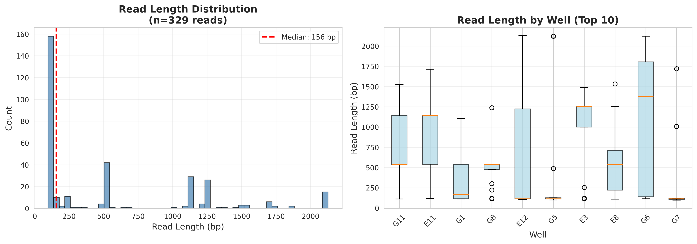
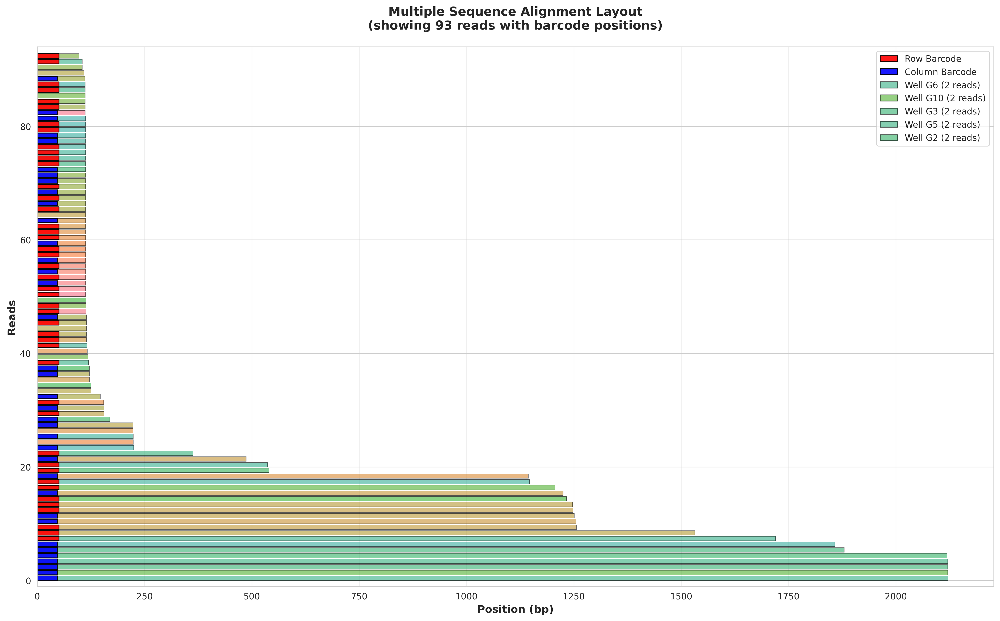
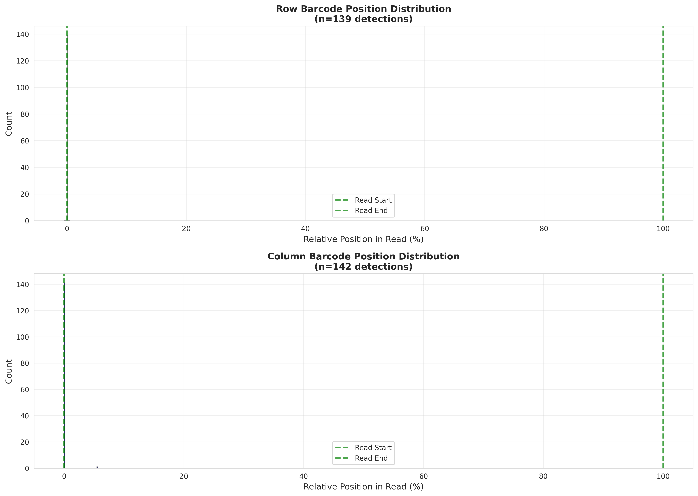
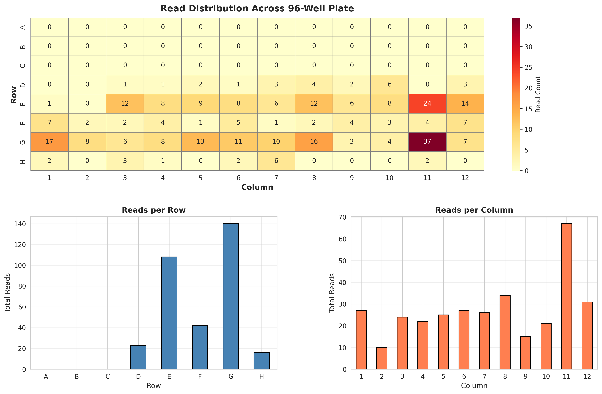

Distribution of read lengths across all wells, showing both overall histogram and per-well box plots for the top 10 wells by read count.
Visualization of read positions and lengths, similar to SeqAn ReadLayout. Each horizontal bar represents a read, colored by well. Red and blue regions indicate row and column barcode positions within the reads.
Distribution of barcode positions along reads, showing where row and column barcodes are typically found. Positions are shown as percentage of read length (0% = start, 100% = end).
Heatmap showing the distribution of successfully demultiplexed reads across the 96-well plate, with row and column summaries.
